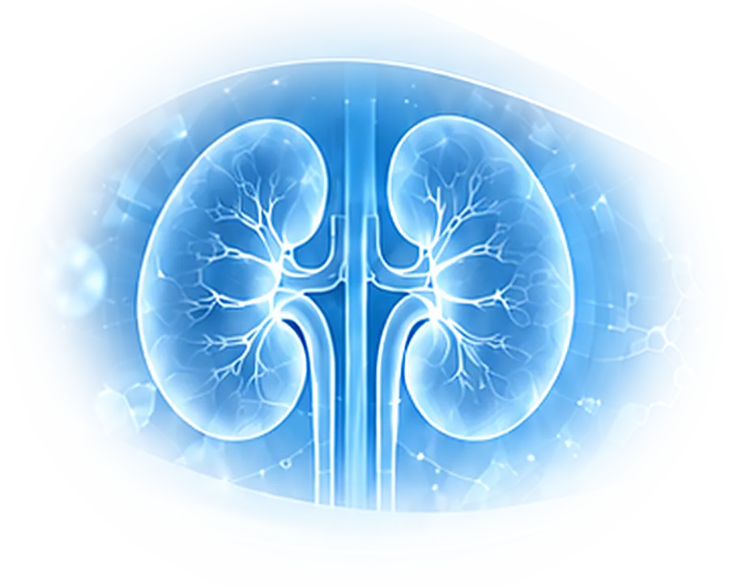

Advancing Blood Purification
Through Hemoadsorption
- Critical Care
- Nephrology
- Dialysis
- Blood Purification
- SCIENCE
- CLINICAL PRACTICE
- MULTIDISCIPLINARY CARE
- BETTER OUTCOMES
INSIDE THE
CARTRIDGE.
- 01
Blood enters
Blood leaves the patient through the circuit and flows into the top of the cartridge.
- 02
Beads adsorb
Porous adsorbent beads fill the cartridge. Target molecules bind inside the pores as blood passes over them.
- 03
Blood returns
Blood cells pass between the beads, leave through the outlet, and return to the patient.

DIFFERENT ROLES.
ONE SHARED PURPOSE.
Care advances when we come together. Join fellow doctors and nurses at SPMC for a summit focused on hemoperfusion and the people behind the practice.
Make space for clinical conversation, new connections, and shared perspectives on blood purification.
SEE YOU
AT SPMC.
- VENUE
- Mahogany Conference Room3rd floor, JICA Building (JICA Outpatient Department / OPD Building), Southern Philippines Medical Center (SPMC)
- AUDIENCE
- Doctors & nurses
- START TIME
- 8:00 AM Philippine time (UTC+8)
- PROGRAMME
- View the proposed schedule →
A DAY OF LEARNING.
FROM THEORY TO PRACTICE.
Hemoadsorption Day – Davao · October 16, 2026
In collaboration with Southern Philippines Medical Center (SPMC).
Proposed schedule, subject to change. All times are Philippine time (UTC+8). Speaker and panel fields absent from the supplied programme are marked to be confirmed.
Download the proposed programme (PDF) →MORNING SESSIONDouble Plasma Molecular Adsorption System+
Registration
HKCI Team
Opening Remarks
Maria Theresa Bad-ang, MD · Nephrologist
DPMAS in Liver Disease: Principles, Clinical Applications, and Nephrology Referral
Karl Paolo Dillera, MD · Hepatologist
DPMAS Clinical Management: Protocols, Patient Readiness, and Nursing Responsibilities
Speaker to be confirmed
Morning Break
DPMAS in Liver Failure: Clinical Experience and Treatment Considerations
Eric Chua, MD · Nephrologist
DPMAS Priming & Hands-On Training
HKCI Clinical Specialists
Open Forum / Q&A
Faculty
LUNCH SYMPOSIUMPelamis+
The Unmet Need in Iron Supplementation
Dr. Maria Theresa Bad-ang · Nephrologist
AFTERNOON SESSIONHemoadsorption Therapy+
Understanding Kidney Disease and the Role of Hemodialysis + HA130 Therapy in Improving Quality of Life Beyond Dialysis
Eladio Miguel Peñaranda, MD · Nephrologist
Hemoadsorption in Acute & Critical Care: Expanding the Role of Blood Purification and Philhealth Guideline
Romina A. Danguilan, MD · Nephrologist
Coffee Break
Hemoadsorption Clinical Experience: Toxicology
Ella Joy Nogas, MD · Toxicologist
Hemoadsorption Clinical Experience
Pol Baulos, MD
Case-Based Discussion & Interactive Expert Panel
Panel to be confirmed
Closing Remarks & Photo Opportunity
Frank Guillano, MD
EVENING SESSIONDinner Symposium & Fellowship Night+
Dinner Symposium — CORZAP
Mark Tom, MD
Fellowship Night & Dinner
All Participants
YOUR NEXT
CONNECTION
STARTS HERE.
Be part of the conversation. Register your interest in the Hemoperfusion Summit 2026.